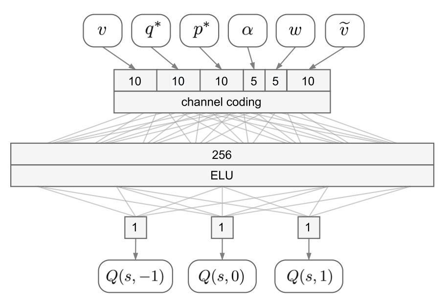

A Reinforcement Learning Approach for Enacting Cautious Behaviours in Autonomous Driving
Abstract
Driving requires handling unpredictable situations. When a pedestrian might suddenly cross the road, a prudent driver limits speed even before danger is certain. This work uses reinforcement learning to learn a safe speed function—a high-level behavioural directive that caps the requested cruising speed (RCS) of an existing autonomous driving system (ADS), rather than learning low-level control from scratch. A safe speed neural network (SSNN) maps the pedestrian context (gaps, orientation, speeds) onto discrete actions that decrease, keep, or increase the RCS so that emergency braking remains feasible if the pedestrian crosses unpredictably. Training uses deep Q-learning in the OpenDS simulator with distracted, crossing-prone pedestrians; the policy transfers to a real vehicle. Statistical analysis shows improved safety at comparable travel speeds. Code is available under MIT license (GitHub, Zenodo).
Cautious driving with a structured SSNN
The paper adopts a layered control architecture inspired by basal-ganglia inhibition of risky affordances: a full driver agent (ADS) still plans motion primitives, while a separate SSNN module assesses risk and adjusts only the RCS—the highest speed the agent is allowed to target. This extends cognition without relearning the entire sensorimotor stack.
The RL problem is model-free double DQL: state \(\mathbf{s}_t = \langle v_t, q^*_t, p^*_t, \alpha_t, w_t, \Delta v_t \rangle\) collects vehicle speed, longitudinal and lateral gaps \(q^*, p^*\) to the pedestrian (normalised by vehicle and pedestrian size plus a safety margin \(\delta\)), pedestrian orientation \(\alpha\) and speed \(w\), and current RCS \(\Delta v\). Actions \(A = \{-1, 0, 1\}\) step the RCS by \(\pm 0.25\,\mathrm{m/s}\). The network outputs \(\langle Q(s,-1), Q(s,0), Q(s,1) \rangle\) directly (one Q-value per action) instead of a separate head per \((s,a)\) pair.
Channel-coded architecture (Figure 5)
Figure 5 is the core model-structured design. The first layer is not a conventional vectorisation of scalars: each continuous input is expanded with channel coding—a cumulative activation that turns a scalar into a population code where larger inputs progressively switch on more channels (logistic thresholds along the input range). This is an explicit structural choice, not an emergent representation inside a black-box MLP.
| Input | Role | Channels |
|---|---|---|
| \(v\) | Vehicle speed | 10 |
| \(\Delta v\) | Current RCS | 10 |
| \(q^*\) | Longitudinal gap to pedestrian | 10 |
| \(p^*\) | Lateral gap to pedestrian | 10 |
| \(\alpha\) | Pedestrian orientation w.r.t. road | 5 |
| \(w\) | Pedestrian speed | 5 |
Together the channel layer has 50 input neurons. Channel coding supports piecewise policies, partitions the state space without collapse under imbalanced data, and yields disentangled channels that can be interpreted—e.g. thresholds on \(p^*\) are placed uniformly on \([0, 10]\,\mathrm{m}\) so the network is sensitive near the lane and saturates beyond \(\sim 10\)–\(12 m\) (“far pedestrian”), avoiding over-trust in noisy lateral estimates; \(q^*\) uses similarly spaced channels to smooth behaviour along the road. After encoding, a single fully connected hidden layer (256 units, ELU) feeds a linear 3-neuron output for the Q-vector. Target and online networks share this layout in double DQL.

Training in OpenDS stresses rare but dangerous crossings; at inference the SSNN modulates RCS while the ADS still handles braking when the pedestrian is already on the road. The explicit channel-coding front-end—fixed topology, hand-placed receptive fields, interpretable saturation—is an early instance of embedding domain structure before learning, in line with later MSNN and nnodely work in Neu4mes.